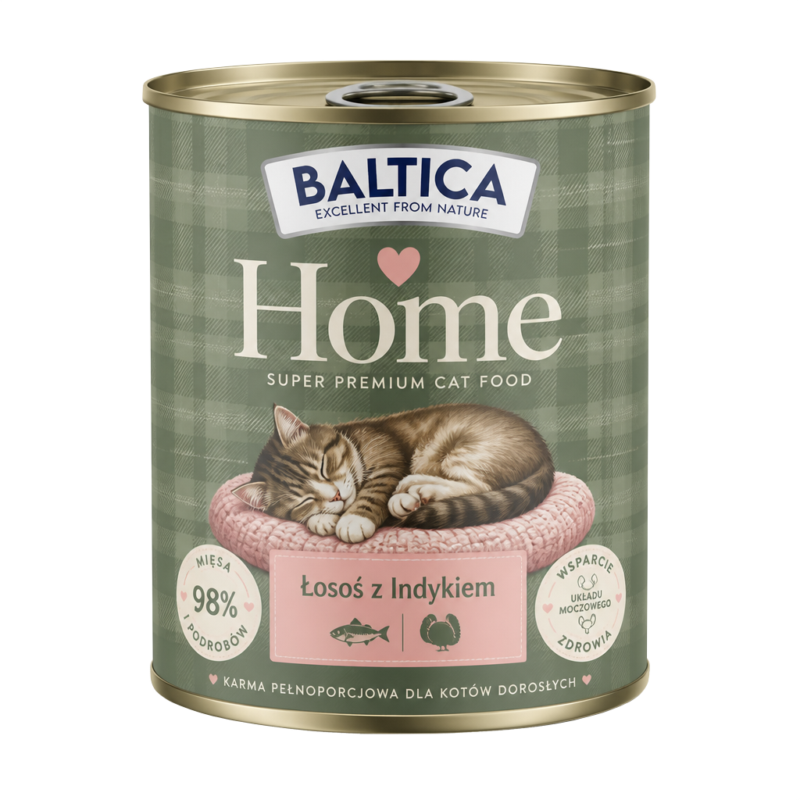
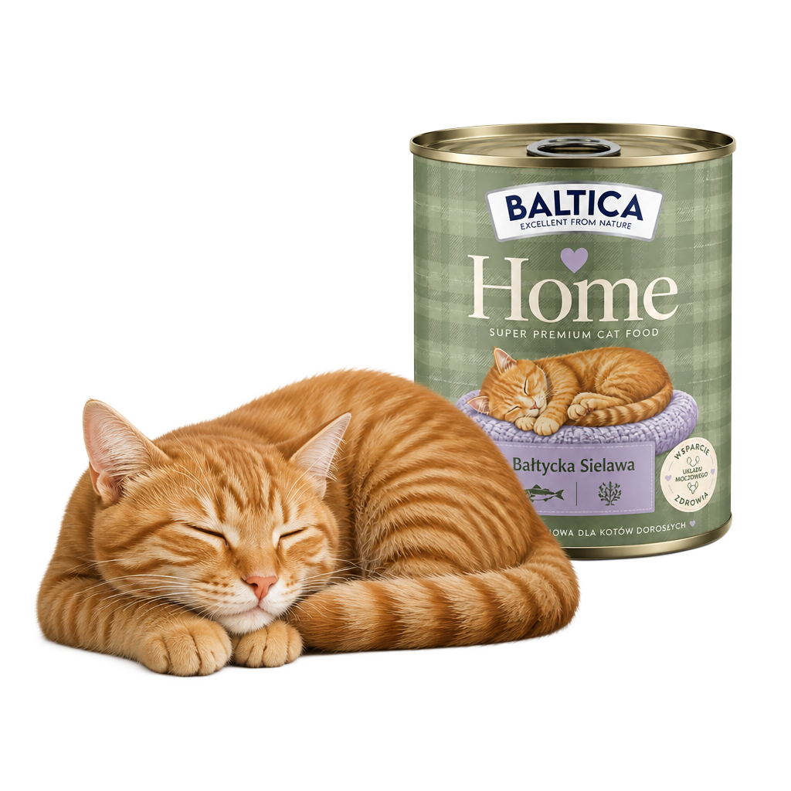

Łosoś z Indykiem
- Delikatne mięso dla wrażliwych brzuszków
- Cenne kwasy Omega-3
- Idealne na co dzień
Mokra karma premium dla kotów

Baltica Home to mokra karma, która łączy czysty, domowy skład z miłością do kotów. Wybierz dla swojego pupila to, co najlepsze, każdego dnia.
Cztery przepyszne receptury, które pokocha Twój kot.
Proste powody, dla których warto dbać o kota mokrą, naturalną karmą.
80% naturalnej wilgoci. Kot pije jedząc, a jego nerki i pęcherz pozostają w dobrej kondycji.
Tylko mięso i witaminy, zero chemii. Skład, który możesz przeczytać i zrozumieć bez słownika.
Aromatyczny bałtycki wywar rybny zachęca do jedzenia nawet najbardziej kapryśne kociaki.
Wszystko, co musisz wiedzieć o karmieniu mokrą karmą, prostym językiem.
Odwiedź nasz sklep lub znajdź nas w mediach społecznościowych.